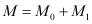
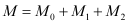
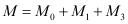

|
|
|


根据 SKF 目录（1994 年）计算
计算摩擦力矩的前提是轴承旋转表面必须被润滑膜隔开。轴承总摩擦力矩由以下各项之和得出：
 | (27.1) |
M0：与载荷无关的摩擦力矩
M0 是由润滑剂中的流体动力学损失决定的。它在快速旋转且负载较轻的轴承中尤其高。该值 M0 取决于润滑剂的数量和粘度以及滚动速度。
M1：载荷依赖摩擦力矩
M1 是由接触表面的弹性变形和部分滑动决定的，尤其是在缓慢旋转且负载较大的轴承中。该值 M1 取决于轴承类型（轴承相关的计算指数），决定摩擦力矩的载荷和平均轴承直径。
对于受轴向载荷的圆柱滚子轴承，还需在公式中加上一个额外的与轴向载荷相关的摩擦力矩 M2 。
 | (27.2) |
M2：与轴向载荷相关的摩擦力矩
M2 取决于圆柱滚子轴承的系数、轴向载荷以及轴承的平均直径。
对于密封的滚动轴承，还需在公式中加上一个与轴向载荷相关的摩擦力矩 M3。
 | (27.3) |
M3：磨削密封的摩擦力矩
磨削密封的摩擦力矩取决于轴承类型、轴承尺寸、密封唇配合面的直径以及密封件的布局。由于密封件的类型、密封唇配合面的直径以及密封件布局因制造商而异，因此很难定义一个普遍适用的摩擦力矩。
选择以显示“设置”选项卡。在其中，您可以选择不同的选项来确定该参考尺寸：
- 所选计算方法中的 SKF 主目录
- 即根据 Hauptkatalog 4000/IV T DE：1994：
您可以在 SKF 目录（该目录已集成到 KISSsoft 软件中）里找到您的轴承中所用密封件类型的数值。如果 KISSsoft 系统在轴承名称中发现熟悉的密封件标记，它将使用目录中列出的系数来计算磨削密封的摩擦力矩。否则，摩擦力矩设为零。
滚动轴承名称中密封件标记的示例：
：这表示该轴承两侧均带有 RS1-type 密封件。然后 KISSsoft 系统会搜索名称中含有 "-2RS1" 的轴承。如果存在该标记，则应用 SKF 目录中的系数并计算磨削密封的摩擦力矩。
- 即根据 Hauptkatalog 4000/IV T DE：1994：
- 根据 ISO/TR 13593:1999 Viton（氟橡胶） Msea 按公式计算：Msea = 3,736*10^-3*dsh；Msea 单位为 Nm，dsh 为轴直径，单位为 mm
- 根据 ISO/TR 13593:1999 Buna N（丁腈橡胶） Msea 按公式计算：Msea = 2,429*10^-3*dsh；Msea 单位为 Nm，dsh 为轴直径，单位为 mm
用于计算的系数 f0、f1（参见"摩擦系数 f0 和 f1"章）以及 P1（取决于轴承类型和轴承载荷的值）取自 ISO 15312。公式、指数和系数取自 SKF 目录（1994 年版）。
Calculation according to SKF Catalog 1994
The prerequisite for calculating the moment of friction is that the bearing rotating surfaces must be separated by a lubricant film. The total bearing moment of friction results from the sum:
(27.1) |
M0: load-independent friction moment
M0 is determined by the hydrodynamic losses in the lubricant. It is especially high in quickly rotating, lightly loaded bearings. The value M0 depends upon the quantity and viscosity of the lubricant, as well as the rolling speed.
M1: load-dependent friction moment
M1 is determined by the elastic deformation and partial sliding in the surfaces in contact, especially due to slowly rotating, heavily loaded bearings. The value M1 depends on the bearing type (bearing-dependent exponents for the calculation), the decisive load for the moment of friction and the mean bearing diameter
For axially loaded cylindrical roller bearings, an additional axial load-dependent moment of friction, M2 , is added to the formula.
(27.2) |
M2: axial load-dependent friction moment
M2 depends on a coefficient for cylindrical roller bearings, the axial loading and the bearing's mean diameter.
For sealed rolling bearings, an additional axial load-dependent moment of friction, M3 is added to the formula.
(27.3) |
M3: Moment of friction for grinding seals
The moment of friction for grinding seals depends on the bearing type, the bearing size, the diameter of the seal-lip mating surface, and the layout of the seal. As the type of seal, the diameter of the seal-lip mating surface, and the seal layout, differ from one manufacturer to another, it is difficult to define a generally applicable moment of friction.
Select to display the Settings tab. In it, you can choose different options for determining this reference size:
- according to SKF main catalog in selected calculation method
- according to the Hauptkatalog (main catalog) 4000/IV T DE: 1994:
You will find values for the seal types used in your bearings in the SKF catalog, which is integrated in the KISSsoft software. If the KISSsoft system finds a familiar seal label in the bearing label, it calculates the moment of friction for a grinding seal using the coefficients listed in the catalog. Otherwise, the moment of friction is set to zero.
Example of a seal label in the name of a rolling bearing:
: this means that the bearing has a RS1-type seal on both sides. The KISSsoft system then searches for names with "-2RS1" in them. If this label is present, the coefficients from the SKF catalog are applied and the moment of friction for grinding seals is calculated.
- according to the Hauptkatalog (main catalog) 4000/IV T DE: 1994:
- according to ISO/TR 13593:1999 Viton Msea calculated with the formula: Msea = 3,736*10^-3*dsh; Msea in Nm, dsh Shaft diameter in mm
- according to ISO/TR 13593:1999 Buna N Msea calculated with the formula: Msea = 2,429*10^-3*dsh; Msea in Nm, dsh Shaft diameter in mm
Coefficients f0, f1 (see chapter Friction coefficients f0 and f1) and P1 (values that depend on the bearing type and bearing load) used for the calculation have been taken from ISO 15312. The formulae, exponents and coefficients have been taken from the SKF Catalog, 1994 Edition.